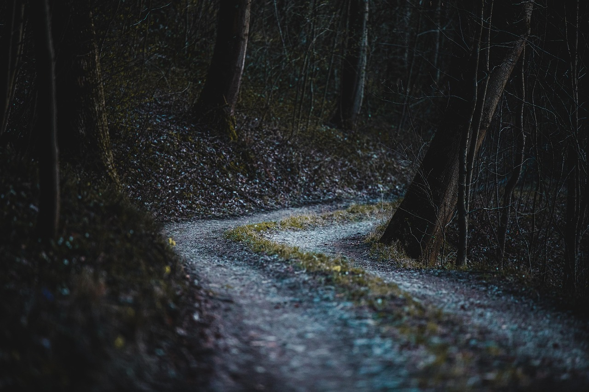

Cape Cod, Massachusetts:
Bei Vollmond denkt man an Werwölfe, in Cape Cod trieb jedoch letzte Nacht ein Grizzly sein Unwesen. Eine junge Studentin wurde grauenvoll zugerichtet von einem Jogger am Waldrand gefunden. Nachdem der Jogger sich nach eigenen Angaben erst einmal übergeben musste, verständigte er umgehend die Behörden. Ein Experte für Wildtiere wurde hinzugezogen, da der Verdacht nahe lag. Laut dem Experten ist es ein untypischer Fall eines Grizzly-Angriffs, aber dennoch absolut vorstellbar. Die Behörden durchkämmen nun die Wälder nach dem besagten Tier, um es unschädlich zu machen und weitere Opfer zu vermeiden. j.g.